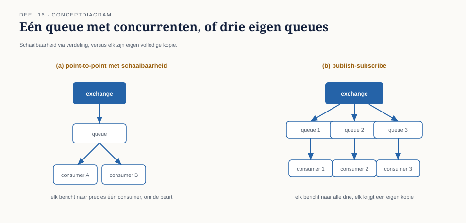
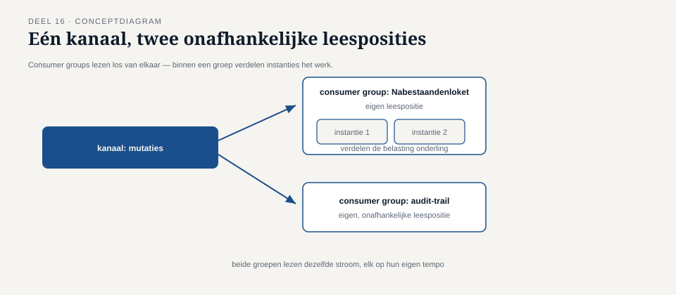

Deel 16 — Messaging-infrastructuur: broker-architecturen en exchange/queue-modellen
Reader · Ductus-cursus Enterprise Integration Patterns · niveau 2 (professional) · deel 16 van 22
16.0 De vraag die Caspar niet kon beantwoorden zonder een tekening
Bij een presentatie aan een nieuwe lichting ontwikkelaars die bij het Programma Mutatieplatform kwam werken, kreeg Caspar een vraag die, na vijftien delen patroononderwijs, verrassend lastig bleek te beantwoorden zonder een schuin oog naar een specifieke technologie: "Als ik een bericht op een kanaal plaats, waar staat het dan letterlijk, en hoe weet een tweede consument dat hij het niet ook moet oppikken?"
Elke voorgaande deel had het woord "kanaal" gebruikt als een abstractie — een naam, een contract, een logische pijp. Dat was een bewuste en correcte keuze: de patronen uit deel 1 tot en met 15 gelden ongeacht welke technologie een kanaal implementeert. Maar de vraag van de nieuwe ontwikkelaar wees op iets reëels: op een gegeven moment moet die abstractie ergens landen in een concreet mechanisme, en dat mechanisme heeft een eigen vocabulaire — exchanges, queues, topics, partities, consumer groups — dat van technologie tot technologie verschilt, maar onderliggend een klein aantal gedeelde concepten deelt.
Dit deel blijft, in lijn met de rest van de cursus, toolneutraal — de vertaling naar specifieke producten (en welke daarvan momenteel actief onderhouden worden) staat in de Toolbijlage. Maar zonder dít deel blijft "kanaal" een woord zonder mechanisme, en dat maakt het onmogelijk om ontwerpkeuzes uit eerdere delen (partitionering in deel 8, guaranteed delivery in deel 8, de kanaaltypen uit deel 2 en 6) daadwerkelijk te implementeren.

16.1 Twee families van brokerarchitectuur
Onder de vele specifieke technologieën vallen brokers grofweg uiteen in twee families, elk met een eigen fundamentele manier om berichten op te slaan en te verdelen. Het is essentieel deze twee te onderscheiden, omdat de keuze tussen hen direct bepaalt welke patronen uit eerdere delen eenvoudig of juist lastig te implementeren zijn.
De queue-gebaseerde broker. Berichten worden geplaatst op een expliciete wachtrij (queue); zodra een consument een bericht ophaalt en bevestigt, verdwijnt het uit de wachtrij — het is, van nature, een point-to-point-mechanisme (deel 2, deel 6). Publish-subscribe wordt in dit model doorgaans gerealiseerd door berichten via een tussenliggend routeringsmechanisme (vaak een "exchange" genoemd, zie 16.2) naar meerdere, aparte wachtrijen te kopiëren — één per abonnee. Elke abonnee krijgt dus feitelijk zijn eigen, aparte wachtrij, gevuld met kopieën van hetzelfde bericht.
De log-gebaseerde broker. Berichten worden niet verwijderd zodra ze zijn opgehaald, maar blijven, voor een ingestelde bewaartermijn (soms onbeperkt), staan in een doorlopend, append-only logboek. Consumenten houden zelf bij tot waar in dat logboek ze gevorderd zijn (een "offset"), in plaats van dat de broker berichten actief "verwijdert" na aflevering. Dit model leent zich van nature voor de bewaareigenschap die deel 11 aan de event backbone toeschreef: nieuwe consumenten kunnen simpelweg vanaf een eerder punt in het logboek beginnen te lezen, inclusief helemaal vanaf het begin, zonder dat de broker daarvoor iets speciaals hoeft te doen.
Kernzin 17 van de cursus: de keuze tussen queue-gebaseerd en log-gebaseerd is niet een implementatiedetail — het bepaalt rechtstreeks of het inhaalprobleem uit deel 6 (de rapportagetabel die een week miste) triviaal op te lossen is, of een aparte constructie vergt.
Bij Meridiaan is, in lijn met de architectuurkeuzes uit deel 11, voor een gelaagde inzet gekozen: het broker-gedeelte van het landschap (command-gedreven verkeer) gebruikt een queue-gebaseerde technologie, terwijl de event backbone (mutatie-gebeurd-verkeer, met de bewaareis uit deel 11) op een log-gebaseerde technologie draait.
16.2 Exchange en queue: het binnenwerk van punt-tot-punt en publish-subscribe
Om de vraag van de nieuwe ontwikkelaar volledig te beantwoorden, is het nuttig het binnenwerk van een queue-gebaseerde broker te ontleden in twee onderdelen die vaak worden samengevoegd in het woord "kanaal", maar functioneel verschillend zijn.
Een exchange (soms anders genoemd, afhankelijk van technologie) is het punt waar een zender een bericht aflevert, en dat bepaalt — op basis van regels die sterk lijken op de content-based router uit deel 4 — naar welke wachtrij(en) het bericht vervolgens wordt gekopieerd of doorgestuurd. Een queue is de daadwerkelijke opslagplaats waaruit een consument berichten ophaalt.
Dit tweeledige model verklaart direct waarom point-to-point en publish-subscribe (deel 2, 6) technisch te realiseren zijn met hetzelfde onderliggende mechanisme: bij point-to-point routeert de exchange elk bericht naar precies één queue (met eventueel meerdere consumenten die concurrerend uit dezelfde queue putten, voor schaalbaarheid — maar elk individueel bericht gaat naar precies één van hen); bij publish-subscribe routeert de exchange een kopie van elk bericht naar elke abonnee-specifieke queue.
Dit verklaart ook direct het antwoord op de oorspronkelijke vraag van de nieuwe ontwikkelaar: een tweede consument "weet" niet zelf dat hij een bericht niet ook moet oppikken — hij pikt simpelweg uit zijn eigen wachtrij, die door de exchange al gescheiden is gehouden van de wachtrijen van andere consumenten. Het onderscheid tussen "één keer verwerkt" en "elke abonnee ontvangt een kopie" zit dus niet in slim consumentgedrag, maar in hoe de exchange de berichten vooraf al heeft verdeeld.

16.3 Partities: hoe volgorde en parallellie samen bestaan
Deel 8 introduceerde partitionering als oplossing voor het volgordeprobleem, met de deelnemersnummer als partitioneringssleutel bij Meridiaan. Dit deel maakt expliciet hoe dat technisch werkt binnen een log-gebaseerde broker, waar het concept van nature past.
Een log-gebaseerde broker verdeelt een kanaal (in deze context vaak "topic" genoemd) in meerdere, parallelle partities — elke partitie is zelf een apart, geordend logboek. Berichten met dezelfde partitioneringssleutel worden consistent naar dezelfde partitie gestuurd (typisch via een hash-functie op de sleutel), waardoor binnen die ene partitie de volgorde van binnenkomst gegarandeerd behouden blijft — precies de garantie die deel 8 nodig had. Tussen verschillende partities is er geen garantie op onderlinge volgorde, wat overeenkomt met de conclusie uit deel 8 dat volgorde alleen ertoe doet binnen de grens van hetzelfde object.
Een queue-gebaseerde broker kent doorgaans geen ingebouwd partitiebegrip op dezelfde manier — volgordeborging per object wordt daar meestal gerealiseerd door bewust één specifieke queue (of een consistente routering naar dezelfde queue) te koppelen aan een specifieke sleutel, een patroon dat in essentie hetzelfde doel dient maar met andere technische middelen.
Vuistregel: de partitioneringssleutel-keuze uit deel 8 is toolneutraal en blijft ongewijzigd van toepassing — alleen het technische mechanisme waarmee die keuze wordt gerealiseerd (partities bij log-gebaseerd, queue-toewijzing bij queue-gebaseerd) verschilt per technologiefamilie.
16.4 Guaranteed delivery: waar persistentie werkelijk zit
Deel 8 introduceerde guaranteed delivery als de garantie dat een bericht, eenmaal aangenomen door het kanaal, niet meer verloren gaat vóór aflevering. Dit deel maakt zichtbaar wáár die garantie technisch wordt waargemaakt: bij vrijwel elke brokertechnologie is dit een expliciete configuratiekeuze tussen in-memory opslag (snel, maar verloren bij een herstart of crash van de broker) en persistente opslag (op schijf weggeschreven, overleeft een herstart, ten koste van doorvoersnelheid).
Dit is precies de instelling die bij Meridiaan tijdens de geplande broker-herstart in deel 8 ontbrak, en die na dat incident expliciet is ingeschakeld. Het is de moeite waard te benadrukken dat dit een instelling is die per kanaal, en soms zelfs per bericht, kan verschillen — niet elk kanaal heeft dezelfde behoefte aan guaranteed delivery. Een hartslag-bericht (opdracht 7.1a) heeft er weinig aan; een salariscorrectie (de rode draad van niveau 1) des te meer. De keuze hoort dus, net als de leveringsgarantie zelf (deel 7), per soort verkeer bewust gemaakt te worden, niet landschapsbreed op één standaardinstelling gezet.
16.5 Consumer groups: hoe meerdere onafhankelijke lezers hetzelfde kanaal delen
Een laatste concept dat het binnenwerk van veel moderne, met name log-gebaseerde, brokers verklaart: een consumer group is een naamgeving voor een verzameling consumenten die zich gezamenlijk gedragen als één logische ontvanger — berichten worden onderling verdeeld over de leden van de groep (voor schaalbaarheid, vergelijkbaar met concurrerende consumenten op één queue), terwijl een andere consumer group, die naar hetzelfde kanaal luistert, een eigen, onafhankelijke kopie van alle berichten ontvangt.
Dit mechanisme is de technische realisatie van iets dat deel 6 al conceptueel beschreef: meerdere, onafhankelijke publish-subscribe-abonnees (bijvoorbeeld het Nabestaandenloket en de audit-trail, elk een eigen consumer group) kunnen tegelijk van hetzelfde kanaal lezen, elk in hun eigen tempo, zonder elkaar te beïnvloeden — terwijl binnen elke groep afzonderlijk parallellie mogelijk is (meerdere instanties van het Nabestaandenloket die samen, verdeeld, de belasting aankunnen).

Samenvatting van deel 16
- Brokers vallen grofweg uiteen in queue-gebaseerd (berichten verdwijnen na aflevering, van nature point-to-point) en log-gebaseerd (berichten blijven bewaard in een doorlopend logboek, van nature geschikt voor de bewaareigenschap van een event backbone).
- Een exchange bepaalt de routering naar wachtrijen; een queue is de daadwerkelijke opslag waar een consument uit put — samen verklaren ze technisch hoe point-to-point en publish-subscribe met hetzelfde onderliggende mechanisme kunnen worden gerealiseerd.
- Partities in een log-gebaseerde broker zijn het technische mechanisme achter de partitioneringssleutel-keuze uit deel 8: volgorde gegarandeerd binnen een partitie, geen garantie ertussen.
- Guaranteed delivery wordt technisch gerealiseerd via persistente (in plaats van in-memory) opslag, een instelling die per kanaal bewust moet worden gekozen, niet landschapsbreed op één standaard gezet.
- Consumer groups realiseren technisch wat deel 6 conceptueel beschreef: meerdere, onafhankelijke abonnees op hetzelfde kanaal, elk met interne parallellie mogelijk.
Vooruitblik
Deel 17 verlaat de infrastructuur en keert terug naar architectuurkeuzes op procesniveau: orkestratie versus choreografie — twee fundamenteel verschillende manieren om te bepalen wie in een keten van stappen de regie voert, en wanneer welke van de twee tot een beheersbaarder landschap leidt dan de andere.